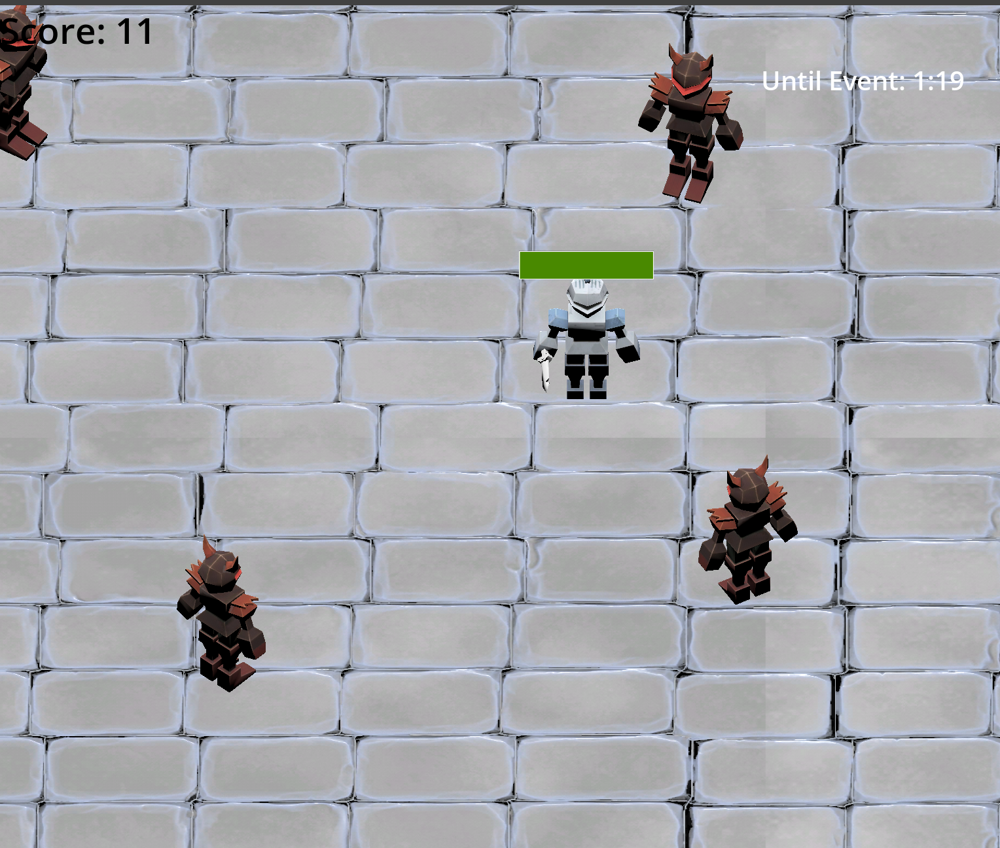
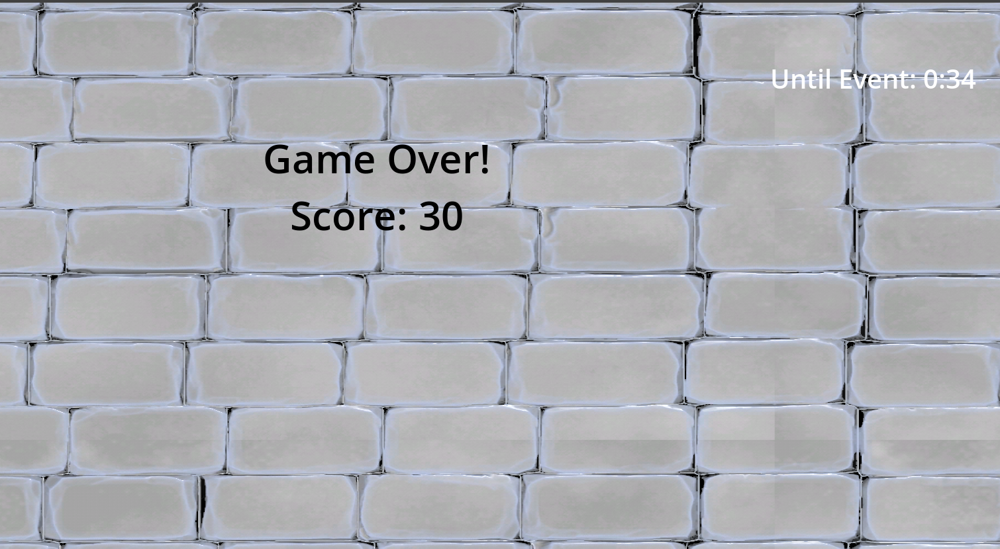

Dimension Prison is a 3D game created using Godot and gdscript. It was created with a group of people and was one of the first 3D game I had created in godot. It was also the first game jam I had participated in. We didn’t finish the game but the game has the player avoid enemies that move toward the player. The player’s score increases every second the player stays alive.


The player has a health bar and the health decreases when the enemy attack the player. When the health bar reaches zero the game over screen is shown it shows the player’s final score. If was had more time we were going to have the background and enemies change when the even countdown reached zero in the top right corner. The game jam theme was about dimensions and this was going to be the way we would have represented that.
Credits
Programers - Abdul Bin Nasir, Dylan Dao, Caitlin San Pedro, Emily Krohn
Background, player, and enemy art: https://pixel-poem.itch.io/dungeon-assetpuck by Pixel_Poem
Background: https://szadiart.itch.io/rogue-fantasy-catacombs?download by Szadi art